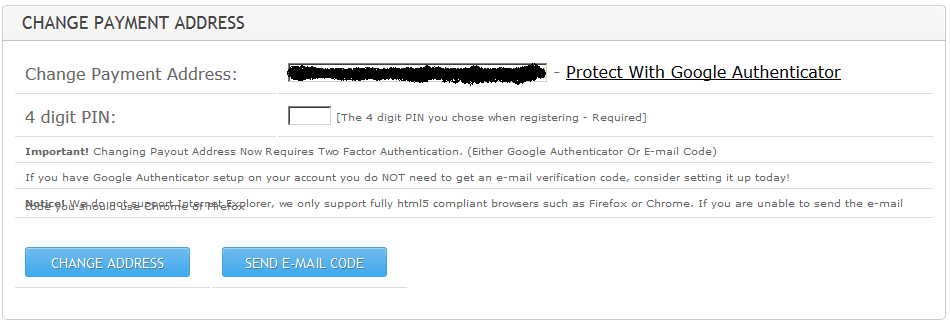
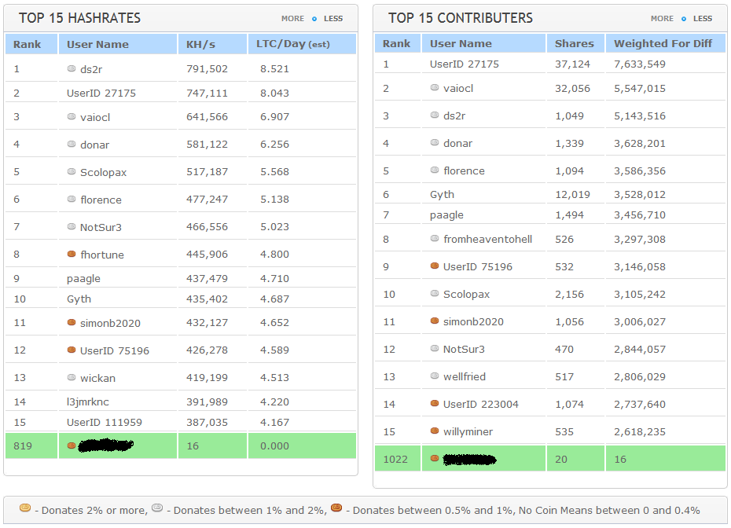

Тут я разбираюсь, как майнить Лайткоины на CPU.
Какой майнинг выбрать?
Существует два режима майнинга Лайткоинов.
Считается, что сложность в настоящий момент настолько возросла, что соло-майнинг невозможен (или возможен, но слишком медленный - надо разбираться дальше). Поэтому здесь будет описана настройка коллективного майнинга.
Выбор пула для коллективного майнинга
В интернете существует много пулов для коллективного майнинга разной степени надежности и выгодности. Я использовал таблицу сравнения на следующей интернет-странице:
https://litecoin.info/Mining_pool_comparison
Оказалось, что:
И только немногие похожи на что-то вменяемое. Я выбирал пулы с системой выплаты PPLNS и остановился на wemineltc.com.
Примечание: на 10.05.2017 данный пул исчез вместе со всеми невыведенными лайткоинами. Так пулы зарабатывают на майнерах. Институт репутации тут не помогает: пул существовал несколько лет, и просто резко закрылся.
Что такое PPLNS можно попытаться понять из следующего описания:
Система выплат PPLNS (Pay Per Last N Shares)
Оплата за последние N шар. Отличие от PPS в том что нет фиксированной оплаты за шару, и в данном случае играет роль скорость нахождения блока или время раунда, чем быстрее находятся блоки тем больше мы получим, ну и наоборот. Это значит что больше не засчитываются действительные шары одного раунда, но рассматриваются подряд N шар, вне зависимости от того к каком раунде они были. Это значит что на более коротких раундах мы, как бы накапливаем шары на следующий раунд, и чем больше подряд коротких раундов – тем больше накоплений, в свою очередь длинный раунд может истощить наши запасы накопленных шар. Что же такое число N? – это приблизительное значение количества шар в раунде, которое берется для расчета награды и оно зависит от сложности. PPLNS используется во всех p2pool.
+ Наиболее выгодная система для постоянных майнеров, т.к. предусматривает двойную и тройную оплату шар.
+ Защита добросовестных майнеров от пул-хопперов, т.к. не могут увидеть где раунд начался ( пулл-хопперы начинают майнить в начале раунда и если раунд затягивается переходят на другой, более удачливый пул, забирая часть награды у постоянных майнеров с первого пула – на системах PROP).
– Награду майнер получит не сразу, а спустя время, т.к. требуется “накопить” некоторое число принятых шар за несколько блоков.
Регистрируемся на сайте wemineltc.com. Вводим логин, пароль, емайл, PIN-код, ответ на контрольный вопрос. Странно, но подтверждающего письма на указанный e-mail не приходит, можно работать сразу. Логинимся, и переходим в раздел "My Account" - "Account details". Видим свои начальные данные:
Необходимо задать Payment Address - то есть Лайткоин-адрес, куда будут направляться для выплаты для вас. Рядом с ним написано "Change below". То есть, этот адрес меняется ниже. Вот как выглядит расположенный ниже раздел смены адреса выплат:

Нужно ввести адрес своего кошелька, ввести PIN-код (который задавали при регистрации), и нажать кнопку "Send e-mail code". На e-mail придет код, который нужно ввести в этом же разделе (после нажатия "Send e-mail code" появится еще одна строка для ввода отправленного кода). После этих действий в разделе Account details появится Лайтоин-адрес.
Далее нужно установить параметр "Automatic Payout" в значение, отличное от нуля. Параметр "Donation %" (вознаграждение для организаторов пула) можно уменьшить до 0.5, если считаете нужным. Чтобы изменения применились, перед нажатием "Update settings" надо ввести PIN-код.
Далее переходим на страницу Worker Accounts, и указываем там параметры нашего веркера. Нужно задать пароль, а так же изменить другие параметры, если необходимо. Парамеры следующие:
Установка майнера
Как было сказано в первой статье, мы только знакомимся с миром Лайткоин, поэтому майнить будем на CPU, и не заморачиваться с настройками видеокарт. Нам понадобится программа CPUMiner, которую можно взять на официальном сайте:
http://sourceforge.net/projects/cpuminer/?source=typ_redirect
Прямая ссылка на сборку под 32-х битный Linux:
http://kent.dl.sourceforge.net/project/cpuminer/pooler-cpuminer-2.4.2-linux-x86.tar.gz
В архиве лежит один файл minerd. Документации, традиционно, нет. Попробуем получить помощь:
$ ./minerd --help
Usage: minerd [OPTIONS]
Options:
-a, --algo=ALGO specify the algorithm to use
scrypt scrypt(1024, 1, 1) (default)
scrypt:N scrypt(N, 1, 1)
sha256d SHA-256d
-o, --url=URL URL of mining server
-O, --userpass=U:P username:password pair for mining server
-u, --user=USERNAME username for mining server
-p, --pass=PASSWORD password for mining server
--cert=FILE certificate for mining server using SSL
-x, --proxy=[PROTOCOL://]HOST[:PORT] connect through a proxy
-t, --threads=N number of miner threads (default: number of processors)
-r, --retries=N number of times to retry if a network call fails
(default: retry indefinitely)
-R, --retry-pause=N time to pause between retries, in seconds (default: 30)
-T, --timeout=N timeout for long polling, in seconds (default: none)
-s, --scantime=N upper bound on time spent scanning current work when
long polling is unavailable, in seconds (default: 5)
--coinbase-addr=ADDR payout address for solo mining
--coinbase-sig=TEXT data to insert in the coinbase when possible
--no-longpoll disable long polling support
--no-getwork disable getwork support
--no-gbt disable getblocktemplate support
--no-stratum disable X-Stratum support
--no-redirect ignore requests to change the URL of the mining server
-q, --quiet disable per-thread hashmeter output
-D, --debug enable debug output
-P, --protocol-dump verbose dump of protocol-level activities
-S, --syslog use system log for output messages
-B, --background run the miner in the background
--benchmark run in offline benchmark mode
-c, --config=FILE load a JSON-format configuration file
-V, --version display version information and exit
-h, --help display this help text and exit
Видим, что есть опции для задания URL пула и пароля.
Запуск майнера
Для получения команды запуска майнера, можно на странице Worker Accounts нажать ссылку "Generate .bat". Будет получен файл следующего содержания:
cgminer.exe --scrypt -o stratum+tcp://global.wemineltc.com:3333 -u <ИмяПользователя>.1 -p <Пароль> -I 13
Мы тут видим, что предполагается использование программы cgminer. А это майнер на GPU. Нам же нужно майнить на CPU через minerd. Поэтому преобразуем команду к синтаксису CPU-майнера. Учтем, что имеем четырехядерный процессор, указав 4 параллельных треда:
minerd --algo=scrypt --url stratum+tcp://global.wemineltc.com:3333 --threads=4 --userpass <ИмяПользователя>.1:<Пароль>
Запустим, и увидим следующий лог:
[2015-11-19 11:54:03] Starting Stratum on stratum+tcp://global.wemineltc.com:3333
[2015-11-19 11:54:03] Binding thread 0 to cpu 0
[2015-11-19 11:54:03] Binding thread 1 to cpu 1
[2015-11-19 11:54:03] 4 miner threads started, using 'scrypt' algorithm.
[2015-11-19 11:54:03] Binding thread 2 to cpu 2
[2015-11-19 11:54:03] Binding thread 3 to cpu 3
[2015-11-19 11:54:05] thread 2: 4096 hashes, 4.91 khash/s
[2015-11-19 11:54:05] thread 0: 4096 hashes, 4.35 khash/s
[2015-11-19 11:54:05] thread 3: 4096 hashes, 4.23 khash/s
[2015-11-19 11:54:05] thread 1: 4096 hashes, 3.99 khash/s
[2015-11-19 11:54:13] Stratum requested work restart
[2015-11-19 11:54:13] thread 3: 32832 hashes, 4.41 khash/s
[2015-11-19 11:54:13] thread 1: 35128 hashes, 4.76 khash/s
[2015-11-19 11:54:13] thread 2: 37024 hashes, 4.89 khash/s
[2015-11-19 11:54:13] thread 0: 31936 hashes, 4.28 khash/s
[2015-11-19 11:54:38] thread 0: 107132 hashes, 4.21 khash/s
[2015-11-19 11:54:38] accepted: 1/1 (100.00%), 18.27 khash/s (yay!!!)
[2015-11-19 11:55:11] thread 3: 264672 hashes, 4.54 khash/s
[2015-11-19 11:55:15] thread 1: 285432 hashes, 4.61 khash/s
Проверка работы
Майнер запущен и работает. Теперь надо подождать около десяти минут, чтобы на пуле набралась статистика, и можно увидеть себя в общем рейтинге майнеров. Для этого надо выбрать в меню пула "Stats" - "Pool Stats". Будет примерно такая картина:

Зеленая строка внизу - это и есть наш майнер. Он работает, и потихоньку считает хеши. Теперь его можно оставить на сутки-двое, чтобы посмотреть статистику, сколько лайткоинов можно заработать на нашем оборудовании. При накоплении 0,1 LTC, эти средства можно будет зачислить на наш кошелек.
Имеет ли смысл майнить?
Теперь, когда все работает, любобытство частично удовлетворено, можно задаться вопросом: а когда мы намайним 0,1 LTC и сможем перевести его в свой кошелек?
В меню пула "Stats" есть пункт "LTC Mining Calculator" - калькулятор майнинга. Воспользуемся им. У нас майнинг идет со скоростью ~18Kh/s (килохешей в секунду). Текущую сложность можно посмотреть через команду:
$ ./litecoin-cli getinfo | grep difficulty
"difficulty" : 46716.21301775,
В принципе, эти числа будут по-умолчанию подставлены на странице калькулятора. И что же мы видим?

Наш четырехядерный процессор Intel(R) Xeon(R) CPU E31220 @ 3.10GHz может обеспечить майнинг 0.14 лайткоина в год! Чтобы получить 1 лайткоин, нам нужно будет майнить 7 лет. А цена лайткоина сейчас чуть больше 3 долларов. Даже если учесть, что на тестовом сервере у меня сейчас непрерывно крутится видеокодирование, Apache, MySQL, Postgres и какая-то еще ботва, и я отключу все кроме майнинга, то выйду на расчетную скорость 40.50Kh/s, которую можно посмотреть в сравнительной таблице:
https://litecoin.info/Mining_hardware_comparison
... то чтобы намайнить 1 лайткоин, потребуется 3 года. Три года, чтобы получить три бакса. Один бакс в год. Это просто смешно.
Учитывая, что вывод с пула возможен для 0,1 LTC, а у нас считается 0,14 LTC в год, то поэкспериментировать с переводами лайткоинов можно будет попробовать через ~8 месяцев непрерывного майнинга.
Теперь попробуем математически оценить, в каком месте рейтинга майнеров мы находимся. На странице статистики пула видны первые 30 майнеров и мы. Загоним эти данные в какой-нибудь excel/calc и посмотрим закономерность. По оси OX выведем рейтинг майнера (т. е. позицию в рейтинге, таким образом слева - самые лучшие), по оси OY - скорость майнера в килохешах в секунду:

Мы 835-е в рейтинге, и у нас 18KH/s. Удручающее зрелище.